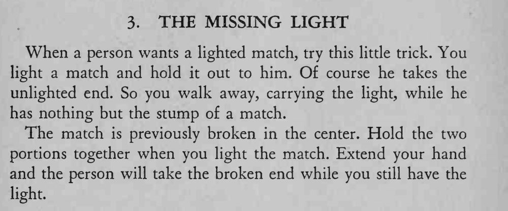

魔术师划燃一根火柴递给观众，观众却只拿到没有火的那一截，火还留在魔术师手里。
两截要并紧，火头那截朝向自己，观众才不会拿到火。

When a person wants a lighted match, try this little trick. You light a match and hold it out to him. Of course he takes the unlighted end. So you walk away, carrying the light, while he has nothing but the stump of a match. The match is previously broken in the center. Hold the two portions together when you light the match. Extend your hand and the person will take the broken end while you still have the light.